Communication & digital content | FR/EN | learning Korean | moving to Seoul in September 2027
---days until September 2027
서울Seoul, here I come
Communication✦K-pop✦Esports✦Live✦서울✦2027✦
02
Introduction
From emotion to vocation
The first time I truly felt the power of live music was at a One Direction concert in Paris. Surrounded by thousands of fans, I understood that a concert is far more than a performance: it is a shared emotion, built by everyone working behind the stage. That is when I discovered communication.
After several years studying languages, I chose to pursue communication, digital media and event management, where I can combine creativity, strategy and community engagement. Today, I am learning Korean and preparing to move to Seoul, with one goal: to help convey the emotions of K-pop artists to fans around the world.
03
Why Korea
From the stage to the screen
My path into communication started at live concerts. Seeing Stray Kids on stage confirmed what I had felt since my first concert: the strongest emotions happen when an artist, a crowd and a whole team behind the scenes come together.
What fascinates me is how K-pop communication turns each release into a story: teasers, visuals, comeback campaigns, fan interactions and behind-the-scenes content. Seoul is at the heart of this industry, and it is where I want to learn how it is done.
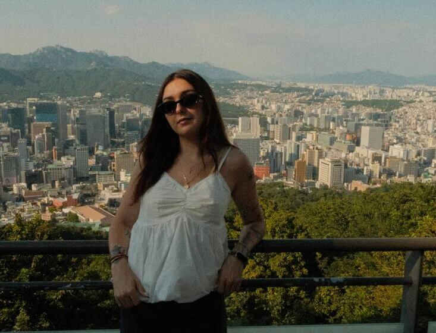
Seoul
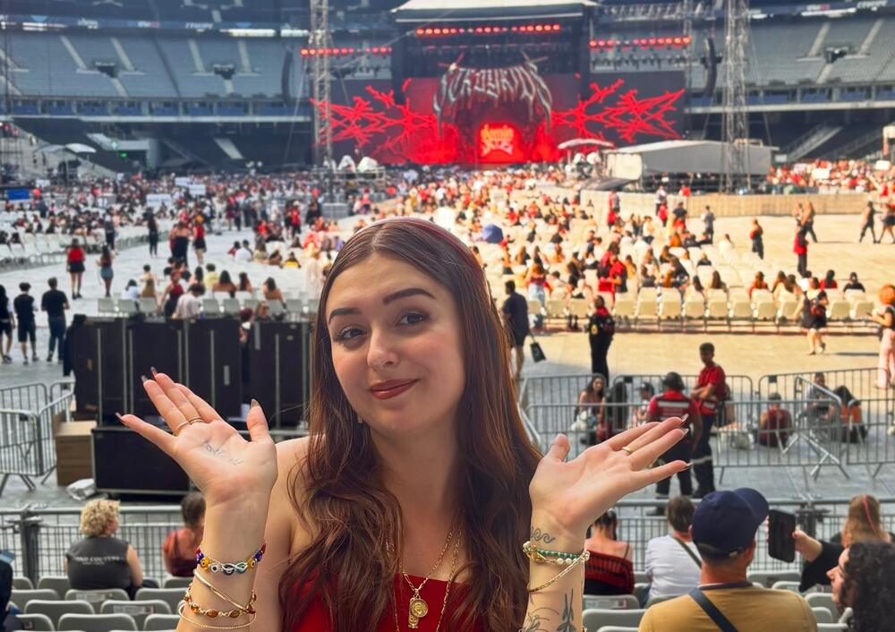
At a Stray Kids concert, Paris, 2025
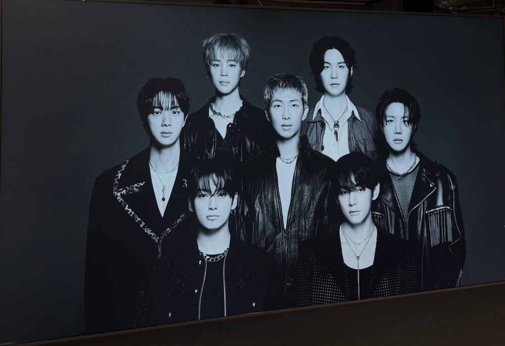
At the BTS pop-up “Arirang”, summer 2026
My interest in Korea also comes from esports: South Korea is the cradle of competitive gaming, with a fan culture, stadium-scale events and community energy that I have worked with first-hand in France. Esports taught me how to engage a fanbase; K-pop is where I want to apply it.
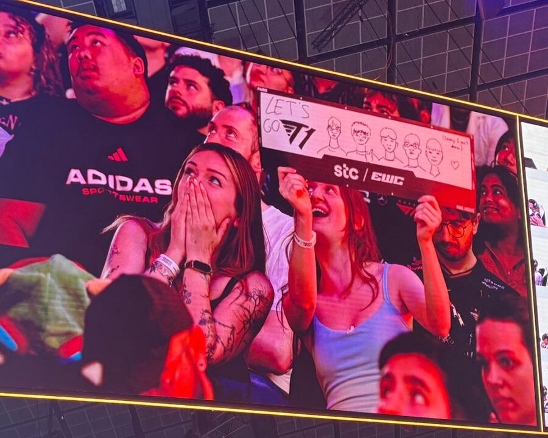
Esports World Cup: a fan holds a “Let’s go T1” sign on the big screen
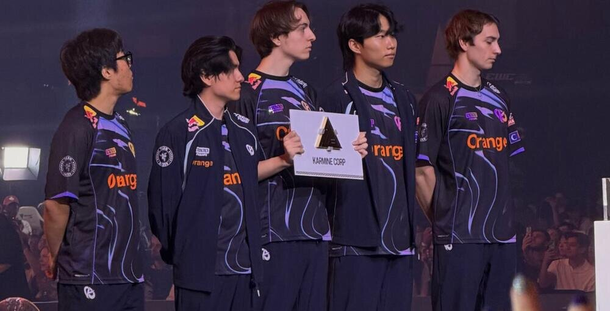
Karmine Corp on stage at the Esports World Cup
How I am preparing
Learning Korean since 2026 (classes, preparing TOPIK 1)
Preparing a Working Holiday year in Seoul from September 2027
Connecting with communication professionals in France and Korea
What I bring
Bilingual content creation (French/English) for an international organization
Community management for fan and supporter communities
Live event coordination, from visual identity to show control
Social media and digital content
What I am looking for
A first experience in K-pop-related communication: fan engagement, international content, events or community management.
Community management: managing and engaging the company’s online communities.
Content creation: producing content for the company’s channels: Instagram, Facebook, X, LinkedIn and YouTube.
Video editing: editing videos for the company’s social channels.
02
Grameen Crédit Agricole Foundation
Oct 2025 – Aug 2026 · Work-study (alternance) contract, Communication and digital marketing
The foundation promotes microfinance and social business globally, an international organization focused on social impact and sustainable finance. I managed the daily communication flow, supported digital infrastructure, and contributed to external and internal visibility across all media channels.
Key responsibilities
Content creation and publishing: articles in French and English on the Foundation’s website, focused on project impact and partner activities.
Website management: maintenance and updates of the institutional website, ensuring accuracy and a good user experience.
Social media management: creating and scheduling content for LinkedIn and Instagram to increase engagement and visibility among key stakeholders.
Event support: organization and coordination of internal and external events (conferences, webinars, partner meetings).
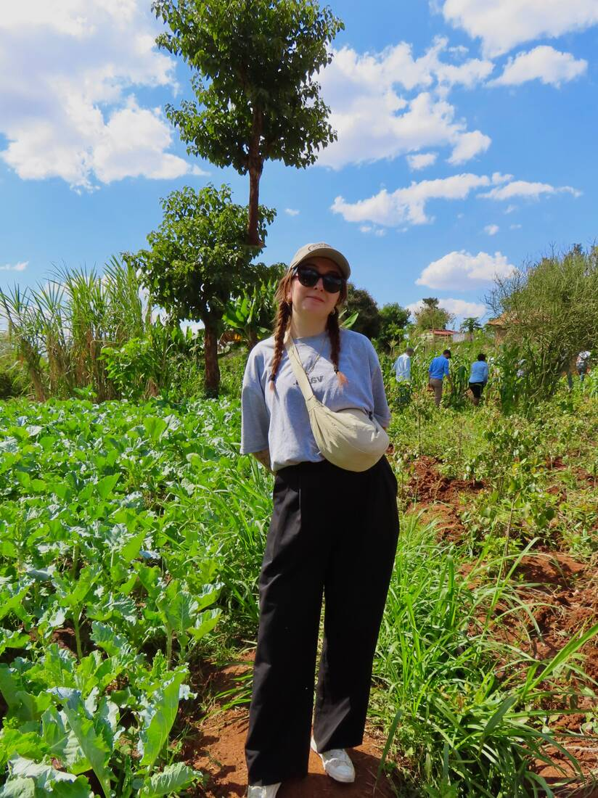
Field visit
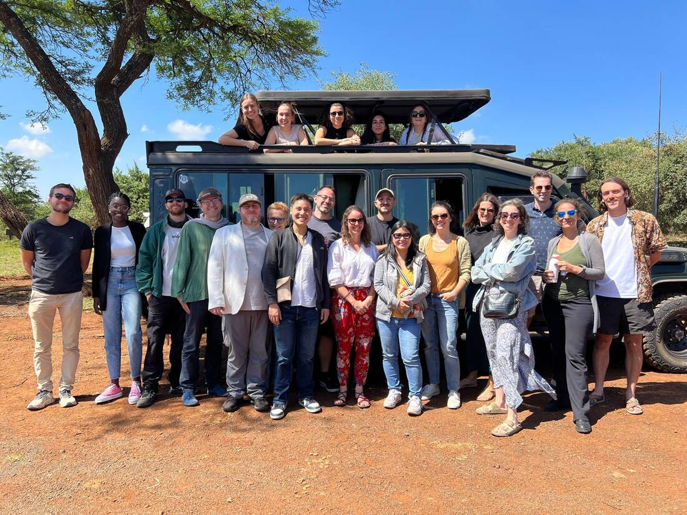
Field visit
Highlight: the first global Grameen Family Gathering (February 2026)
60+participants
25Grameen-inspired organizations
17countries
A milestone event for the Grameen movement, built around three objectives: zero poverty, zero unemployment, and zero carbon emissions.
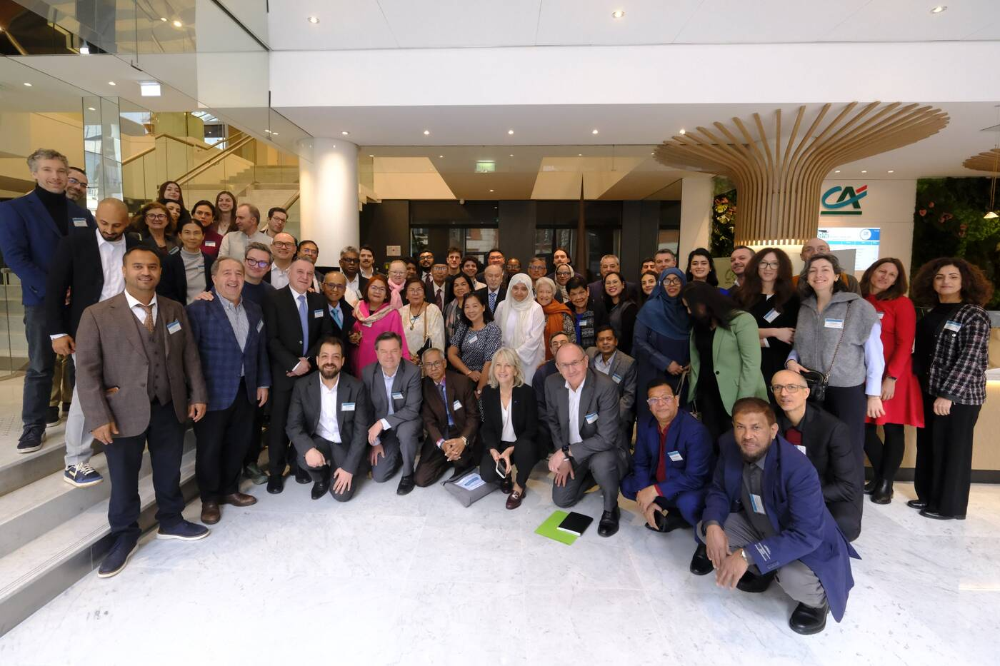
Participants of the first global Grameen Family Gathering, February 2026
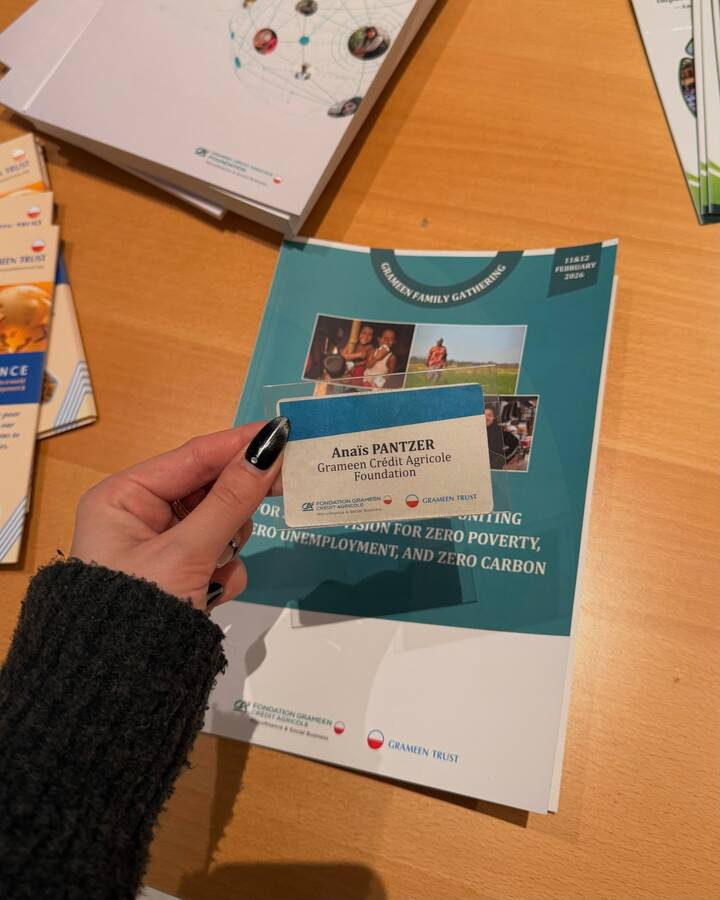
The participant booklet I designed
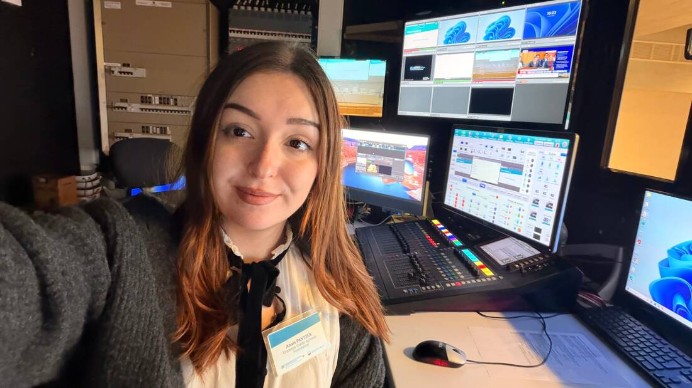
Live show coordination during the two-day gathering
Visual identity and communication: I created and produced all visual and communication assets, in print and digital: a cohesive visual identity, posters, brochures, signage, conference documentation, and digital assets for social media, presentations and online resources.
Logistics and live coordination: I supported the general secretary on overall logistics and took charge of live show coordination during the two-day gathering: session flows and timing, technical and logistical coordination in real time, and support to speakers and participants.
05
Fan engagement & live entertainment
Communities, supporters and live events
Bilal Hassani on stage at La Maison Bleue, Strasbourg
Bilal Hassani concert: merchandising team
Nov 2026 · Paid assignment via Bonsoir le Merch · La Maison Bleue, Strasbourg
A one-night assignment with the merchandising team of Bilal Hassani’s concert, through Bonsoir le Merch, the agency handling his merchandise. I was in charge of the merch stand, from setup to closing.
Set up the whole stand on arrival: visual layout, stock and all the elements
Ran the stand from doors opening to closing: payments, order preparation, stand and stock management
After the concert, kept the stand running during Bilal’s signing session and helped it go smoothly as he met his fans
Guided at the start by Bilal’s manager, who made sure everything went well for me
His community was incredibly kind and welcoming, and the atmosphere was fantastic: a real show.
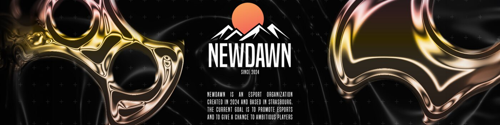
NewDawn Esport LinkedIn banner
NewDawn Esport
Jun 2024 – 2026 · Co-founder · Activity currently on hold
An emerging esports non-profit association. I helped define its foundational structure, brand identity and commercial strategy, combining leadership and execution to build a strong community presence and secure early-stage funding.
Co-founded the organization and oversaw administrative and operational setup
Developed brand guidelines and an editorial strategy for a consistent organizational voice
Managed social media presence and engagement, building a loyal community
Identified, secured and managed initial partnerships and sponsorships, creating revenue streams for the team
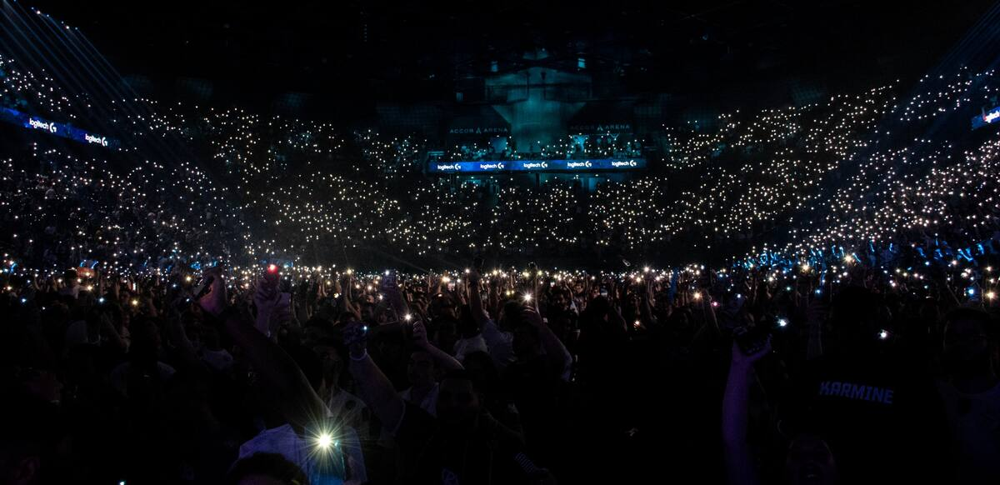
Accor Arena, a Karmine Corp event
Le Blue Wall
Oct 2024 – Jul 2025 · Volunteer
I volunteered with Le Blue Wall, the supporters’ association of Karmine Corp. It showed me how engaged and passionate esports fans can be, and I wanted to help grow this community. I created visuals for social networks, managed online communities, worked at large-scale events and produced live content during them.
06
Projects
Creative challenges, research, study trips and side projects
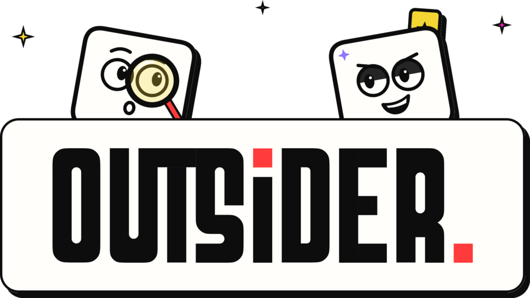
Personal↗
Outsider: la règle d’or
Since Oct 2026 (ongoing) · Mobile party game · Side project with friends · Communication lead
3–20players, one phone
16
Academic↗
Applied research: why does K-beauty communication appeal to Western consumers?
2025 · MBA 1 applied research paper · Written and laid out by me
16/20final grade
24h
Academic↗
DEHORS: “Un premier pas”
Nov 2026 · 24-hour creative challenge · Team of 6, as team leader
16.5/20final grade
Personal↗
Study trip: Learning Expedition in China
19 Aug – 3 Sep 2026 · ISCOM · Beijing and Xi’an
Personal
Outsider: la règle d’or
Since Oct 2026 (ongoing) · Mobile party game · Side project with friends · Communication lead
A party game played on a single phone, placed in the middle of the group. Each round, the app secretly draws the roles: a few players are outsiders, everyone else is an insider who knows a hidden rule (snapping fingers before every sentence, for example) and must apply it flawlessly. The outsiders have to find the rule before time runs out.
3–20players, one phone
5 minper round
81rules today, around 100 planned at launch
My role
I am the communication lead, working alongside the founder and a marketing teammate. I think up and produce the project’s communication content, from the brand voice (friendly, fun, situational humour) to the channels we are preparing for the beta: Instagram, TikTok, Facebook, LinkedIn and YouTube.
Applied research: why does K-beauty communication appeal to Western consumers?
2025 · MBA 1 applied research paper · Written and laid out by me
16/20final grade
63survey respondents
77.8%discovered K-beauty on social media
An analysis of how South Korea exported not only cosmetics but an imaginary, combining the Hallyu wave, cultural storytelling, digital influence and adaptation to Western markets.
Method
Literature and market data (Statista, Mintel, KOCCA, press and academic sources)
Quantitative survey of 63 consumers and one in-depth interview
Visit of the “K-beauty” exhibition at the Musée Guimet in Paris
Key findings
Culture opens the door, but product efficacy and innovation retain customers
Only 13.9% discovered K-beauty through K-pop or K-dramas
Inclusivity is the main limit: only 2% find it very inclusive
Nov 2026 · 24-hour creative challenge · Team of 6, as team leader
16.5/20final grade
39% → 55%target of honored free bookings
61%of free bookings never honored
A full campaign for DEHORS, an app that helps young people find local outings. The goal: raise the share of honored free bookings from 39% to 55% among 18-25s in Bordeaux and Nantes.
My role
I led the team and defined the overall strategy, from the analysis to the creative concept and the action plan, while contributing hands-on to every stage.
Big idea
“Un premier pas”: “Le plus dur, c’est de passer la porte. DEHORS s’occupe du reste.” People book out of desire but skip the event because they fear going out alone.
Jury feedback: the strong coherence of the project and the level of detail we pushed it to.
Personal
Study trip: Learning Expedition in China
19 Aug – 3 Sep 2026 · ISCOM · Beijing and Xi’an
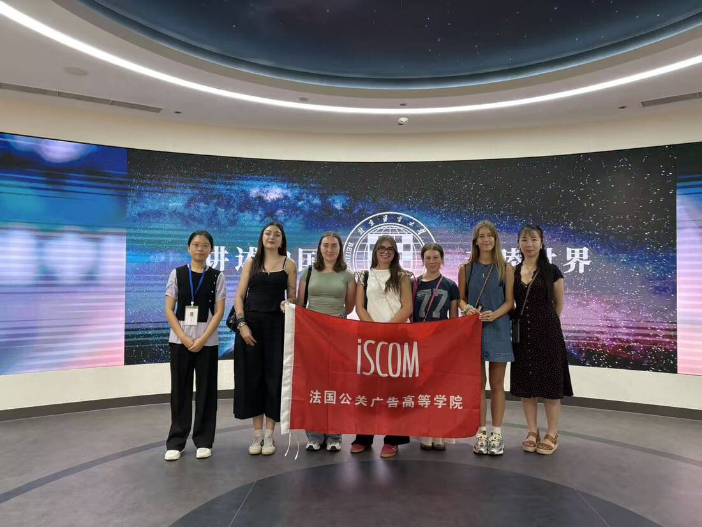
ISCOM Learning Expedition, China 2026
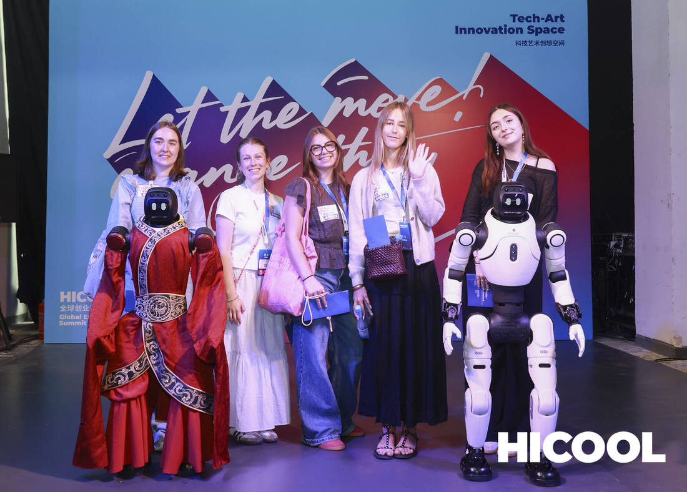
ISCOM Learning Expedition, China 2026
In summer 2026, I took part in ISCOM’s Learning Expedition in Beijing and Xi’an: a university and language exchange, and a series of meetings with media and communication professionals.
Beijing Youth Daily: an exchange with the newsroom, then a day at the HICOOL Envision Your Future Summit.
CCTV+: a meeting with a journalist about her career path and her view of Chinese media.
Beijing Language and Culture University and French expats: how French language and culture shine in China, and honest stories about working there.
I came back convinced that the future of communication is international, a conviction that drives my project to work in Seoul.